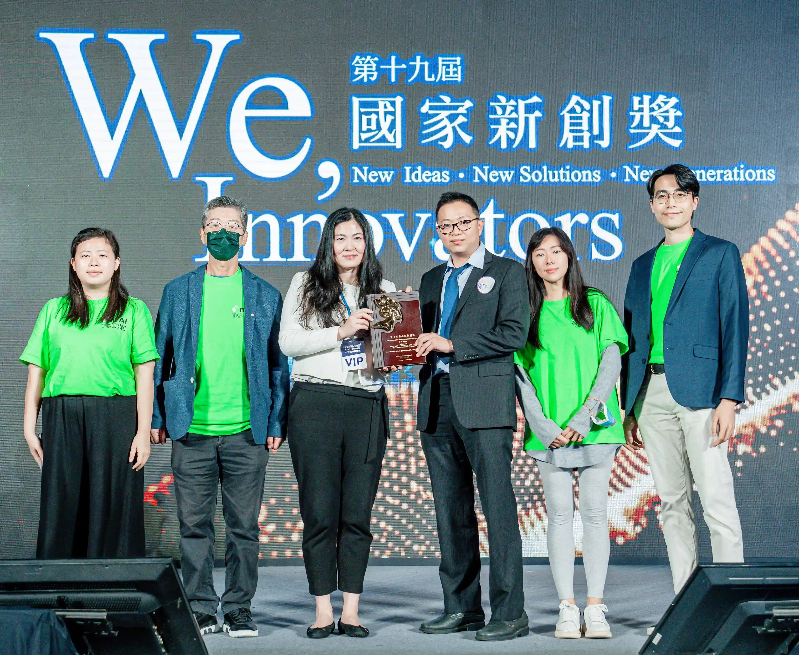

新聞發布 | 2022.12.23
m'AI Touch團隊在今年的「第十九屆國家新創獎」中脫穎而出，榮獲殊榮，並入選「InnoZone技術特展」的十大亮點，展現出技術創新的卓越實力與未來發展的巨大潛力。
國家新創獎由社團法人國家生技醫療產業策進會設立，是台灣生醫領域、學術研究單位及醫院的最高指標獎項，每年吸引眾多廠商報名參賽，競爭異常激烈。經過嚴格的三階段審查，獲獎團隊不僅代表其技術創新得到政府及業界的高度肯定，更能在國際舞台上展現台灣團隊的研究能量與創新能力。
m'AI Touch透過異質感測器與AI演算法的雙重保障，成功解決了市場上電梯非接觸式按鈕的技術挑戰。我們的核心技術專注於將防止病毒傳播的解決方案無縫融入日常生活，讓使用者無需改變原有操作習慣，即可享受高穩定性且精準的電梯操作體驗。相較於需要大量人力進行清潔的傳統方法（如消毒薄膜和酒精消毒），m'AI Touch的技術不僅能有效防止病毒傳播，還顯著減少了資源浪費，並提升了公共衛生水平。此AI非接觸式外掛裝置適用於各類新舊電梯，無需更改原有面板，安裝時間可縮短至3小時內，大幅降低了重新裝修的時間與成本。即使電梯設有門禁系統，也不會受到外掛裝置的影響。
m'AI Touch以其在非接觸式技術領域的突破性成果贏得評審青睞，這一榮譽不僅象徵著我們的技術實力，也標誌著我們在推動生醫創新的道路上邁出了重要一步。未來，我們將繼續秉持創新精神，開發更具前瞻性的技術，為全球生醫產業帶來更多解決方案，並提升人類生活品質。